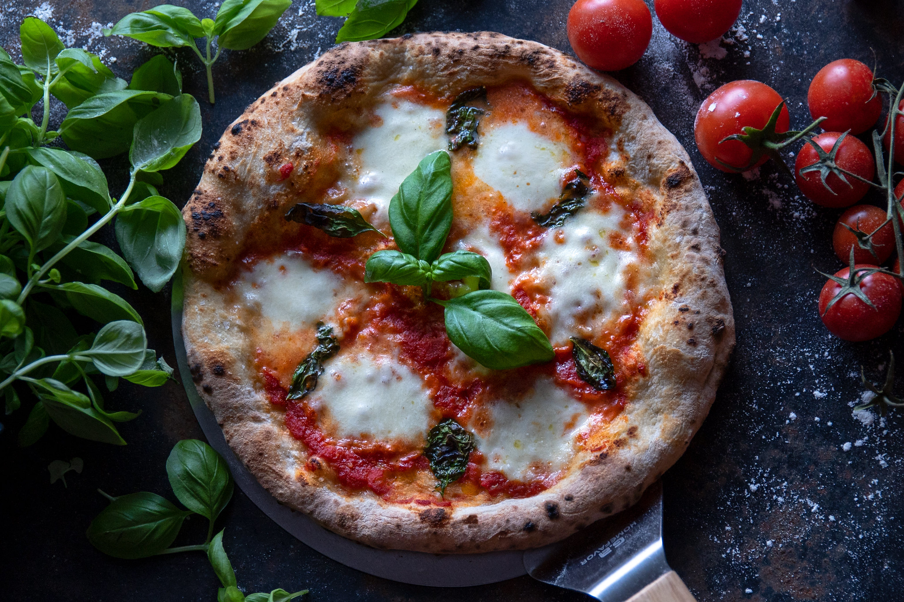

Italian Food & Culture
Italian cuisine is loved and respected worldwide. From pizza in Naples to pasta in Rome, every region has its own identity. Fresh ingredients and simple cooking make the food unforgettable.
Among Italy's most iconic restaurants is L'Antica Pizzeria da Michele, situated right in the heart of the bustling city of Naples.
Below is an example picture of the world-famous Pizza Margherita, which is one of the most recognizable symbols of Italian Heritage
